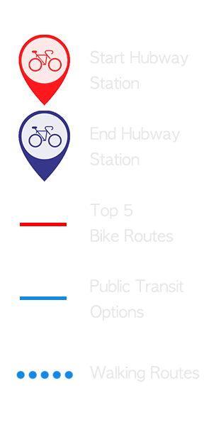

Find the gaps between Hubway and MBTA
This interactive website presents the analysis of the current gaps between existing MBTA routes and frequent Hubway paths in Cambridge, MA
Data source: Cambridge public transportation lively routes from MBTA; 2017 annual behaviour of Hubway riders between stations from Hubway official website by month.
